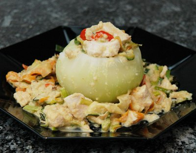

| Zutaten für 4 Personen: | |
| 4 | Kohlrabi |
| 200 g | Pouletfleisch, geschnetzelt |
| 2 | Rüebli |
| 1 | Lauch |
| 1 | Zucchetti |
| 2 El | Butter |
| 1 El | Sbrinz |
| 1 dl | Rahm |
| Salz | |
| Pfeffer | |
Kohlrabi schälen, je einen Deckel wegschneiden und aushöhlen.
Das Ausgehöhlte in wenig Salzwasser weich kochen, pürieren und beiseite stellen.
Die ausgehöhlten Kohlrabi sowie die Deckel in leicht gesalzenem Wasser knapp weich kochen und warm stellen.
Rüebli schälen, Lauch rüsten, Zucchetti nur waschen. Alles in sehr feine Julienne-Streifen schneiden.
Pouletfleisch in Butter andämpfen und warm stellen.
Gemüsejulienne anschliessend in der Butter weich dämpfen.
Fleisch und Gemüse mit dem Kohlrabipüree mischen, Rahm und geriebenen Käse zugeben und wenn nötig mit etwas Kohlrabiwasser verdünnen und würzen.
In die warm gestellten Kohlrabi einfüllen, Deckel aufsetzen und als Vorspeise oder Beilage heiss servieren.
Beobachter, 20/89
Das ergibt durchaus ein Hauptgericht. Vielleicht sind die Kohlrabis grösser geworden seit 1989? Es ist recht aufwendig aber schmeckt fein. Irgendwo zwischen 3 und 4 Punkten. RE 24.9.2009
@LINKBACK_TAG@ @WAKELOCK@